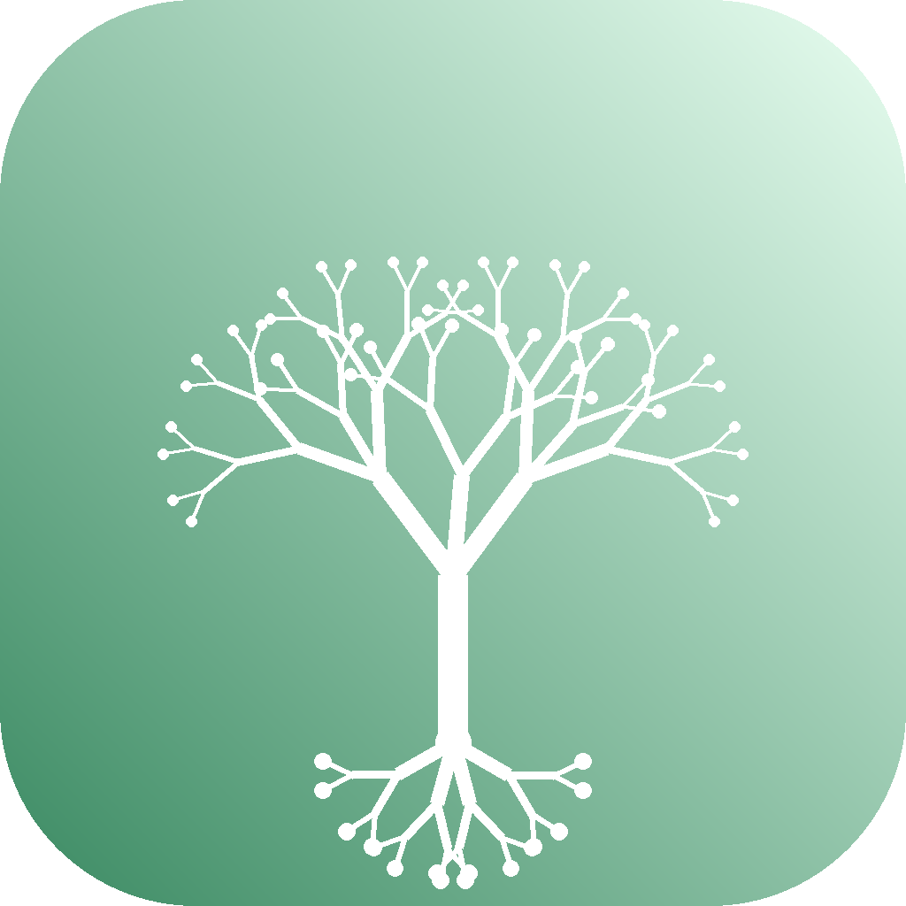

Transform any raw prompt into expert-level output using local LLMs via Ollama — no cloud API keys, no data sent to external servers.
173 prompt engineering techniques across 15 categories — Chain-of-Thought, Tree-of-Thought, ReAct, MECE, Constitutional AI, red teaming, and more — applied before your LLM ever sees the input.
No API calls to external servers, no subscription fees. Powered by free, open-source Ollama. Your data never leaves your machine.
Run two LLMs in parallel with split-screen streaming, then synthesize both outputs into a single unified, superior document.
One-click web UI for beginners, full-featured CLI with scripting support for power users. Compiled single-icon apps for macOS, Windows, and Linux.
173 techniques across 15 categories, including:
macOS / Linux:
git clone https://github.com/TFD-42/Prompturgy.git && cd Prompturgy && chmod +x install.sh && ./install.sh
Or download a compiled app — no Python required: